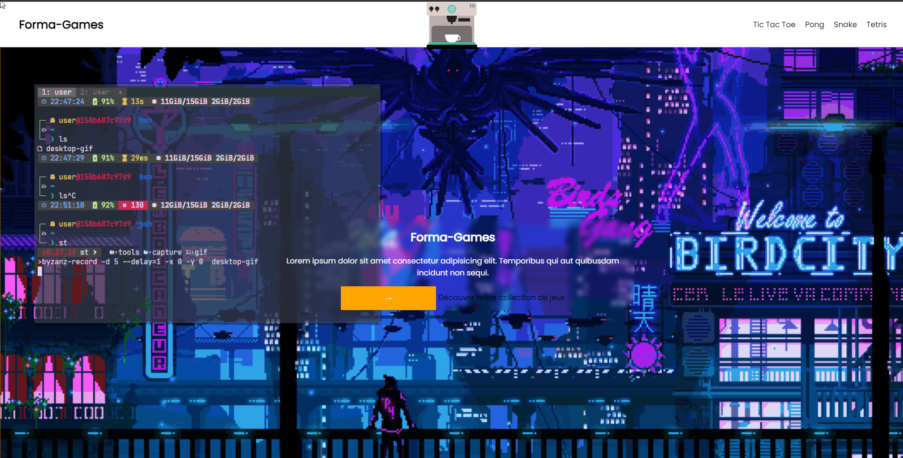

Site de jeux
Ce projet est composé d'un site répertoriant divers jeux crées sur 2 semaines dont Tetris - Snake - Shifumi - Pong.
Les technologies utilisées sont :
HTML - CSS - JS
Je suis Nicolas Araujo, passionné par l'informatique ( et les jeux ) depuis mon enfance, j'ai décidé de me lancer dans le milieu de l'informatique en commençant par me former avec une formation DWWM ( Développeur Web et Web Mobile ).
Ayant fais une formation DWWM d'un ans de Novembre 2022 à Novembre 2023, j'ai pu découvrir et
développer
certaines compétences dans le domaines du développement web.
Par ailleurs j'ai aussi développé
certaines compétences en ayant travaillé pendant 1 an dans un supermarché en tant qu'employé
commercial - caissier - hôte d'accueil
Voici une sélection de projets sur lesquels j'ai travaillé au cours de ma formation. Ils ont gagné en complexité et en intérêt au fur et à mesure de mon apprentissage.
Ce projet est composé d'un site répertoriant divers jeux crées sur 2 semaines dont Tetris - Snake - Shifumi - Pong.
Les technologies utilisées sont :
HTML - CSS - JS
La première partie d'un projet. Cette partie consiste d'un "front" fait en VueJS.
Les technologies utilisées sont :
HTML - CSS - VueJS
La seconde partie d'un projet. Cette partie consiste d'un back-office, création de base de donnée, liaison entre celle-ci et le front.
Les technologies utilisées sont :
HTML - SCSS - PHP - MySQL - Twig
Première partie d'un projet consistant de l'interface disponible à l'utilisateur. Une maquette à était crée et utilisée avant de commencer le développement afin d'avoir des directives lors de la création.
Les technologies utilisées sont :
HTML - CSS - VueJS - Figma ( Maquette)
Seconde et dernière partie du projet, possédant une interface administrateur servant à
ajouter des mangas et des catégories à la base de donnée.
Une API est disponible
pour faire la liaison entre le front et le back.
Les technologies utilisées sont :
CSS - PHP - MySQL - Twig - Symfony
Ce projet est le dernier fait lors de ma formation, il a servi à la création du dossier projet que j'ai présenté en fin d'année afin de valider mon titre professionnel. Il est composée des différentes étapes de création de celui-ci, ainsi que d'autres informations demandée pour la validation des différentes compétences du titre professionnel de DWWM.
Télécharger le fichier en pdfAyant validé ma formation de Développeur Web et Web Mobile (Novembre 2022 - Novembre 2023) et obtenu le titre professionnel DWWM, j'envisage actuellement de rechercher un emploi dans le domaine ou de suivre une formation pour obtenir un titre professionnel plus avancé.